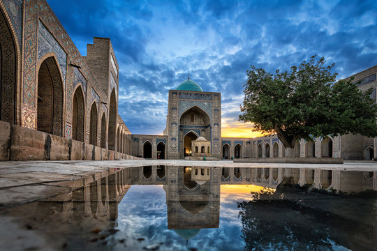
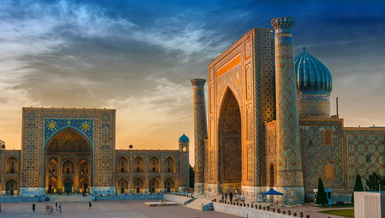
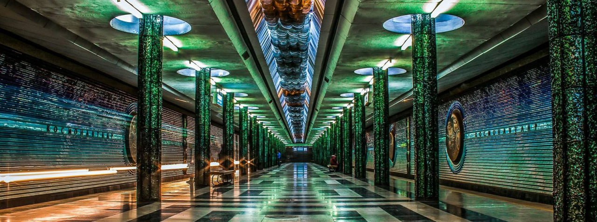
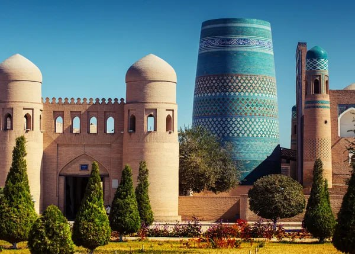

O'zbekiston Turizmi
O‘zbekistonda turizm so‘nggi yillarda barqaror o‘sib bormoqda, chunki mamlakat o‘zini sayyohlik yo‘nalishi sifatida...
Kirish
O‘zbekistonda turizm so‘nggi yillarda barqaror o‘sib bormoqda, chunki mamlakat o‘zini sayyohlik yo‘nalishi sifatida...
Kirish

Buxoro o‘zida qadimiy urf-odatlarning ko‘p asrlik tarixini Islom dini bilan mujassamlashtirdi...
Ko'rish
Samarqand dunyo taraqqiyotining eng qadimgi va markaziy shaharlaridan biri boʻlib, jahon madaniyati...
Ko'rish
Mustaqillik yillarida Toshkentdagi islom madaniyati obidalarining aksariyati, jumladan, Koʻkaldosh, Abulqosim, ayniqsa...
Ko'rish
Xiva oʻzining tarixiy oʻtmishi, meʼmoriy tuzilishi, obidalarining yaxlit saqlanganligi jihatidan mazkur...
Ko'rish| S.n | Touritstic places | Years | Number of tourists | Benefits from tourists ($) | Location |
|---|---|---|---|---|---|
| 1 | "Buxoro" | 2023 | 9.000 | 15.00$ | Ko'hna Ark |
| 2 | "Samarqand" | 2024 | 12.000 | 20.000$ | Registon |
| 3 | "Toshkent" | 2021 | 7.000 | 13.00$ | Ko'kaldosh Madrasasi |
| 4 | "Xiva" | 2022 | 11.000 | 12.000$ | Muhammad Aminxon madrasasi |